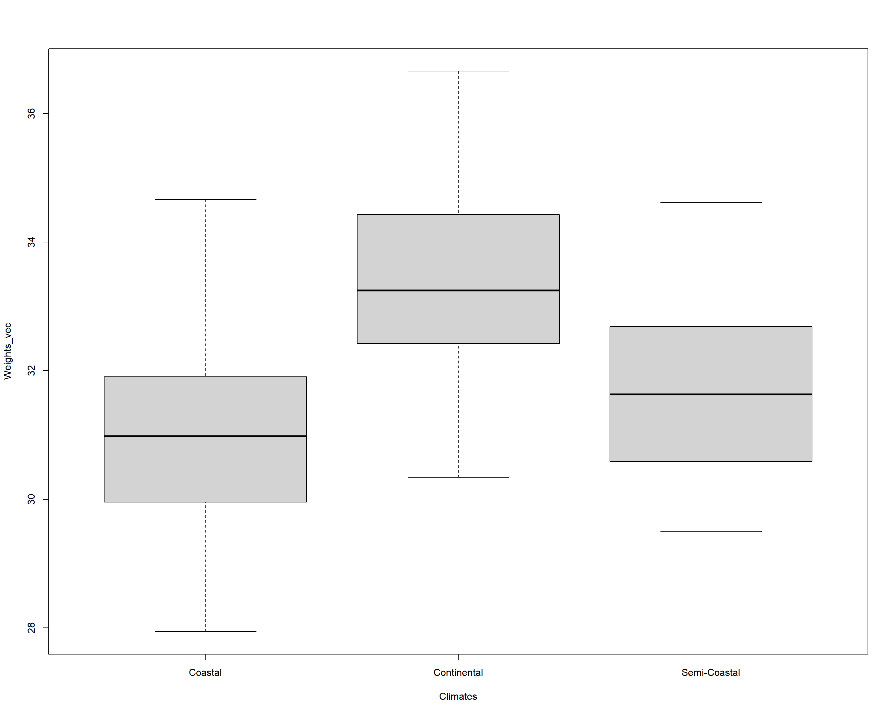
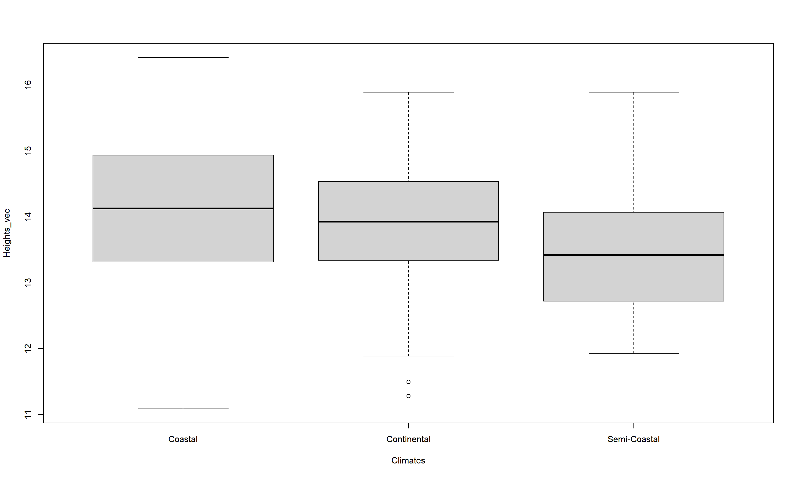
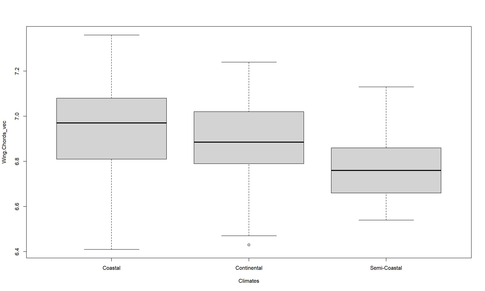
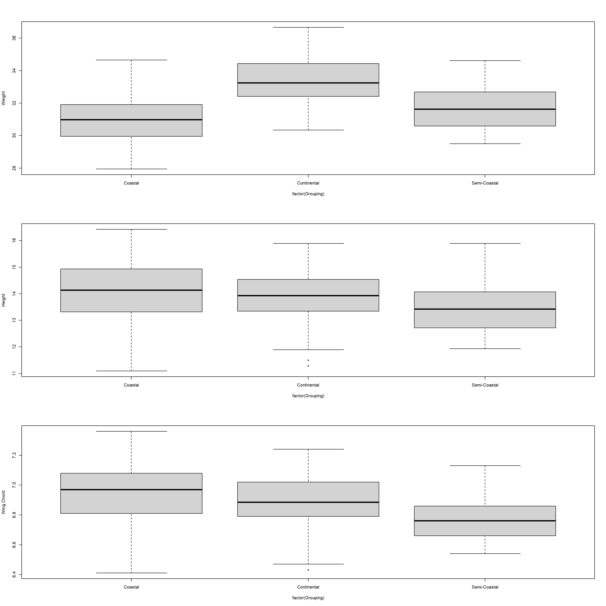
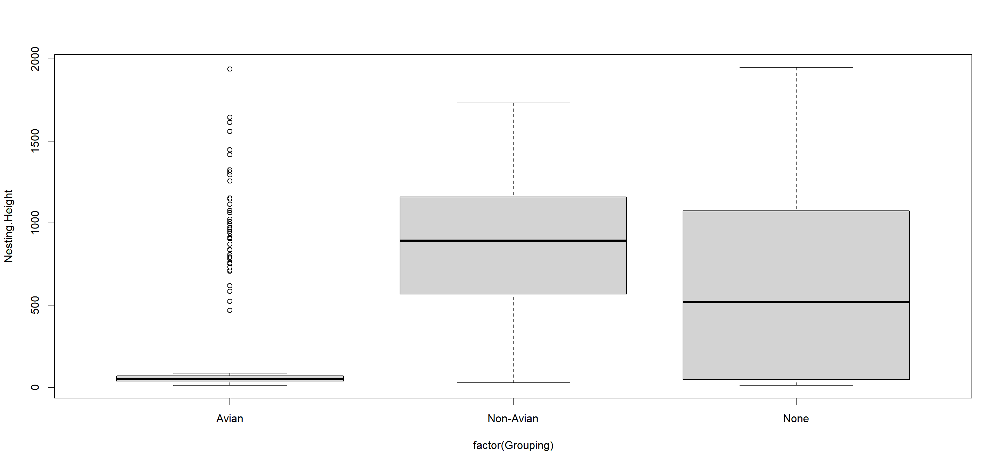
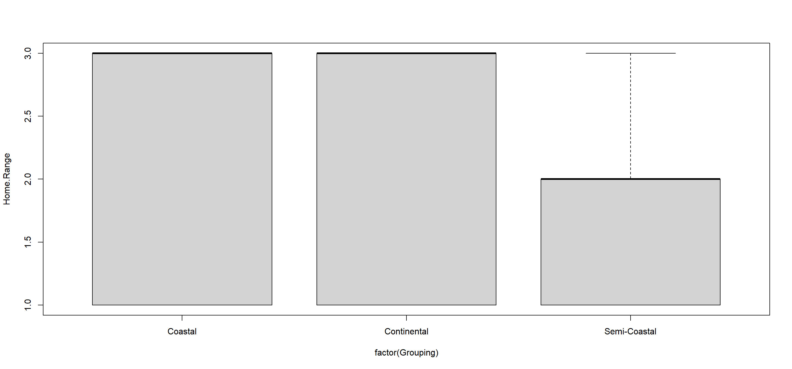
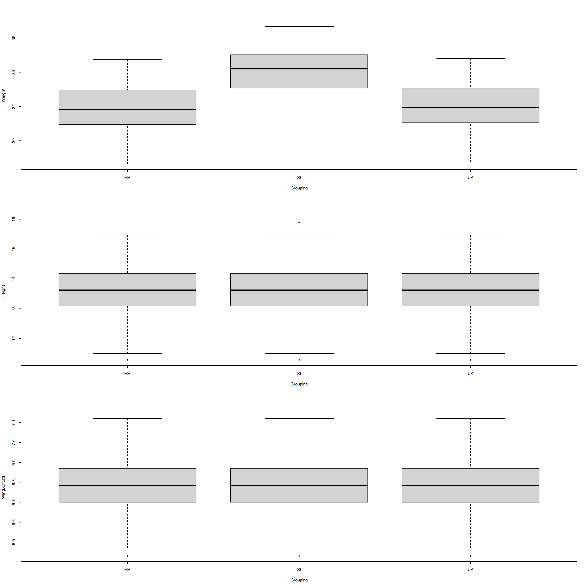
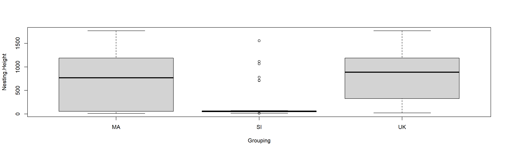
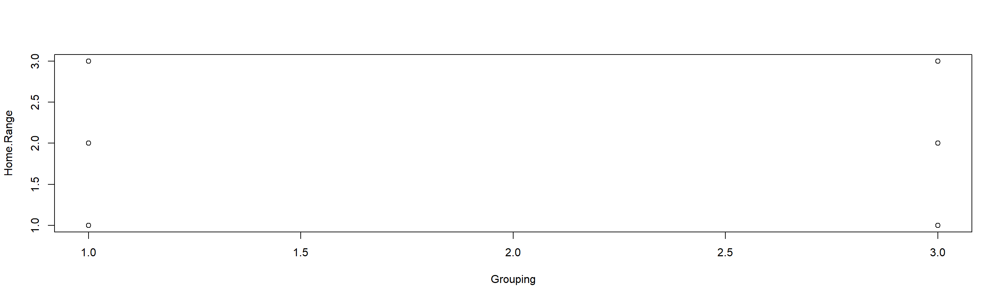

Ordinal & Metric Tests (More-Than-Two-Sample Situations)
Theory
Welcome to our fifth practical experience in R. Throughout the following notes, I will introduce you to a couple statistical approaches for metric or ordinal data when wanting to compare more than two samples/populations that might be useful to you and are, to varying degrees, often used in biology. To do so, I will enlist the sparrow data set we handled in our first exercise.
I have prepared some Lecture Slides for this session.
Data
Find the data for this exercise here, here, and here.
Preparing Our Procedure
To ensure others can reproduce our analysis we run the following three lines of code at the beginning of our R coding file.
rm(list=ls()) # clearing environment
Dir.Base <- getwd() # soft-coding our working directory
Dir.Data <- paste(Dir.Base, "Data", sep="/") # soft-coding our data directory
Packages
Using the following, user-defined function, we install/load all the necessary packages into our current R session.
# function to load packages and install them if they haven't been installed yet
install.load.package <- function(x) {
if (!require(x, character.only = TRUE))
install.packages(x)
require(x, character.only = TRUE)
}
package_vec <- c()
sapply(package_vec, install.load.package)
## list()
As you can see, we don’t need any packages for our analyses in this practical. Take note that I am not using ggplot2 for data visualisation today. Personally, I find it cumbersome for “behind-the-scenes” boxplots (which is what I’ll use a lot today) and so I am presenting you with the base R alternative.
Loading Data
During our first exercise (Data Mining and Data Handling - Fixing The Sparrow Data Set) we saved our clean data set as an RDS file. To load this, we use the readRDS() command that comes with base R.
Data_df_base <- readRDS(file = paste(Dir.Data, "/1 - Sparrow_Data_READY.rds", sep=""))
Data_df <- Data_df_base # duplicate and save initial data on a new object
Kruskal-Wallis Test
Climate Warming/Extremes
Does morphology of Passer domesticus depend on climate?
Using the Mann-Witney U Test in our last practical, we concluded that climate (when recorded as “Continental” and “Non-Continental”) is an important driver of Passer domesticus morphology. Now we will see whether this holds true when considering non-continental climates as coastal and semi-coastal ones.
Take note that we need to limit our analysis to our climate type testing sites again as follows (we include Manitoba this time as it is at the same latitude as the UK and Siberia and holds a semi-coastal climate type):
# prepare climate type testing data
Data_df <- Data_df_base
Index <- Data_df$Index
Rows <- which(Index == "SI" | Index == "UK" | Index == "RE" | Index == "AU" | Index == "MA")
Data_df <- Data_df[Rows,]
Weight
Let’s start with weight records of common house sparrows:
WeightCont <- with(Data_df, Weight[which(Climate == "Continental")])
WeightSemi <- with(Data_df, Weight[which(Climate == "Semi-Coastal")])
WeightCoast <- with(Data_df, Weight[which(Climate == "Coastal")])
Weights_vec <- c(WeightCont, WeightSemi, WeightCoast)
Climates <- c(
rep("Continental", length(WeightCont)),
rep("Semi-Coastal", length(WeightSemi)),
rep("Coastal", length(WeightCoast))
)
Climates <- as.factor(Climates)
kruskal.test(Weights_vec, Climates)
##
## Kruskal-Wallis rank sum test
##
## data: Weights_vec and Climates
## Kruskal-Wallis chi-squared = 150.98, df = 2, p-value < 2.2e-16
We conclude that the three-level climate variable is an important source of information to understand what drives weight records of Passer domesticus and thus reject the null hypothesis (p = $1.6418184\times 10^{-33}$).
boxplot(Weights_vec ~ Climates)

Looking at the boxplot, we can understand the distribution of weight records as grouped by climate types and identify weight records to be biggest for continental climates followed by semi-coastal ones with similar spreads. Coastal climates, on the other hand, show a remarkable spread of weight records of Passer domesticus with a markedly lower median than the two previous categories.
Height
Secondly, let’s repeat the above Kruskal-Wallis Test for the height/length records of our Passer domesticus individuals:
HeightCont <- with(Data_df, Height[which(Climate == "Continental")])
HeightSemi <- with(Data_df, Height[which(Climate == "Semi-Coastal")])
HeightCoast <- with(Data_df, Height[which(Climate == "Coastal")])
Heights_vec <- c(HeightCont, HeightSemi, HeightCoast)
Climates <- c(
rep("Continental", length(HeightCont)),
rep("Semi-Coastal", length(HeightSemi)),
rep("Coastal", length(HeightCoast))
)
Climates <- as.factor(Climates)
kruskal.test(Heights_vec, Climates)
##
## Kruskal-Wallis rank sum test
##
## data: Heights_vec and Climates
## Kruskal-Wallis chi-squared = 15.635, df = 2, p-value = 0.0004027
boxplot(Heights_vec ~ Climates)
 We conclude that the three-level climate variable is an important source of information to understand what drives height records of Passer domesticus and thus reject the null hypothesis (p = $4.0267296\times 10^{-4}$).
Looking at the boxplot, we can understand the distribution of height records as grouped by climate types and identify height records to be smallest for continental climates followed by semi-coastal ones with similar spreads. Coastal climates, on the other hand, show a remarkable spread of height records of Passer domesticus with a markedly higher median than the two previous categories.
Wing Chord
Third, we will test whether climate is a good predictor for wing chord of common house sparrows:
Wing.ChordCont <- with(Data_df, Wing.Chord[which(Climate == "Continental")])
Wing.ChordSemi <- with(Data_df, Wing.Chord[which(Climate == "Semi-Coastal")])
Wing.ChordCoast <- with(Data_df, Wing.Chord[which(Climate == "Coastal")])
Wing.Chords_vec <- c(Wing.ChordCont, Wing.ChordSemi, Wing.ChordCoast)
Climates <- c(
rep("Continental", length(Wing.ChordCont)),
rep("Semi-Coastal", length(Wing.ChordSemi)),
rep("Coastal", length(Wing.ChordCoast))
)
Climates <- as.factor(Climates)
kruskal.test(Wing.Chords_vec, Climates)
##
## Kruskal-Wallis rank sum test
##
## data: Wing.Chords_vec and Climates
## Kruskal-Wallis chi-squared = 41.539, df = 2, p-value = 9.548e-10
boxplot(Wing.Chords_vec ~ Climates)

We conclude that the three-level climate variable is an important source of information to understand what drives wing chord records of Passer domesticus and thus reject the null hypothesis (p = $9.5482279\times 10^{-10}$).
Looking at the boxplot, we can understand the distribution of wing chord records as grouped by climate types and identify wing chord records to be smallest for continental climates followed by semi-coastal ones with similar spreads. Coastal climates, on the other hand, show a remarkable spread of wing chord records of Passer domesticus with a markedly higher median than the two previous categories.
Automating the Analysis
As we have seen, running seperate tests for every research question may be a bit cumbersome and so we may want to automate the analysis by establishing our own user-defined function as follows:
AutomatedKruskal <- function(Variables, Groups, Plotting){
# establish data frame to save results to
Export <- data.frame(
Variables = Variables,
Grouped_by = rep(Groups, length(Variables)),
Chi_Squared = rep(NA, length(Variables)),
DF = rep(NA, length(Variables)),
p_value = rep(NA, length(Variables))
)
for(i in 1:length(Variables)){
# extract data and groups from data frame
YData <- Data_df[,which(colnames(Data_df)==Variables[i])]
XData <- Data_df[,which(colnames(Data_df)==Groups)]
# establish a list holding our groups for our data
Data <- list()
Grouping <- list()
for(k in 1:length(unique(XData))){
Data[[k]] <- YData[which(XData == unique(XData)[k])]
Grouping[[k]] <- rep(unique(XData)[k], length = length(Data[[k]]))
} # end of k-loop
Data <- unlist(Data)
Grouping <- unlist(Grouping)
# fill data frame
Export[i, 3] <- kruskal.test(Data, Grouping)[["statistic"]][["Kruskal-Wallis chi-squared"]]
Export[i, 4] <- kruskal.test(Data, Grouping)[["parameter"]]
Export[i, 5] <- kruskal.test(Data, Grouping)[["p.value"]]
# optional plotting
if(Plotting == TRUE){
plot(Data ~ factor(Grouping), ylab = Variables[i])
}
} # end of i loop
# return data frame to R outside of function
return(Export)
} # end of function
This function is named AutomatedKruskal() and takes three arguments: (1) Variables - a vector of character typed identifiers for the variables we want to have tested, (2) Groups - a character string identifying the grouping variable, (3) Plotting - a logical statement (TRUE or FALSE) whether boxplots shall be produced.
The function then proceeds to establish an empty data frame which it will store the results of our Kurskal-Wallis Tests in. Afterwards, it cycles through all variables contained within the Variables statement, extracts the relevant data, grouping it according to the specified grouping variable (Groups), runs the test, fills the data frame and plots the data if Plotting has been set to TRUE.
Let’s re-run our earlier test on sparrow morphology as influenced by climate using this function by calling it:
par(mfrow = c(3,1)) # adjust plotting panes
AutomatedKruskal(Variables = c("Weight", "Height", "Wing.Chord"),
Groups = "Climate",
Plotting = TRUE)

## Variables Grouped_by Chi_Squared DF p_value
## 1 Weight Climate 150.97901 2 1.641818e-33
## 2 Height Climate 15.63477 2 4.026730e-04
## 3 Wing.Chord Climate 41.53899 2 9.548228e-10
As we can see from the results above, our function works flawlessly and we can use it going ahead.
Furthermore, we can confirm some of the results of our Mann-Whitney U Test from last seminar.
Predation
Does nesting height depend on predator characteristics?
Again, using the Mann-WHitney U Test in our last exercise, we identified both predator presence as well as predator type to be important predictors for nesting height of Passer domesticus.
We may wish to use the entirety of our data set again for this purpose:
Data_df <- Data_df_base
Using the Kruskal-Wallis Test, we can combine these two predictors by turning every record of predator type that is recorded as NA into “None” which will then serve as an identifier for the absence of any predators effectively making the predator presence variable redundant:
# changing levels in predator type
levels(Data_df$Predator.Type) <- c(levels(Data_df$Predator.Type), "None")
Data_df$Predator.Type[which(is.na(Data_df$Predator.Type))] <- "None"
# running analysis
AutomatedKruskal(Variables = "Nesting.Height", Groups = "Predator.Type", Plotting = TRUE)

## Variables Grouped_by Chi_Squared DF p_value
## 1 Nesting.Height Predator.Type 88.81797 2 5.169206e-20
Using our Automated Kruskal() function, we can conclude that the aggregation of predator presence to predator type records serve as an excellent predictor for sparrow nesting height and reject the null hypothesis (p = $5.169206\times 10^{-20}$).
Therefore, we can argue that avian predation forces sparrows into low nesting sites, non-avian predation leads to more elevated nesting sites in Passer domesticus and absence of predators seems to not force nesting height in any direction or restricting its spread.
Competition
Does home range depend on climate?
Having used the Mann-Whitney U Test to identify possible climate-driven changes in home ranges of Passer domesticus in our last seminar, we concluded that climate types largely affect home ranges of the common house sparrow.
Take note that we need to limit our analysis to our climate type testing sites again as follows (we include Manitoba this time as it is at the same latitude as the UK and Siberia and holds a semi-coastal climate type):
# prepare climate type testing data
Data_df <- Data_df_base
Index <- Data_df$Index
Rows <- which(Index == "SI" | Index == "UK" | Index == "RE" | Index == "AU" | Index == "MA")
Data_df <- Data_df[Rows,]
Let’s test this for our three-level climate variable:
Data_df$Home.Range <- as.numeric(factor(Data_df$Home.Range))
AutomatedKruskal(Variables = "Home.Range", Groups = "Climate", Plotting = TRUE)

## Variables Grouped_by Chi_Squared DF p_value
## 1 Home.Range Climate 6.243918 2 0.04407075
Using our Automated Kruskal() function, we can conclude that the three-loevel climate variable serves as an excellent predictor for sparrow home range and reject the null hypothesis (p = $0.0440707$) thus being at odds with our Mann-Whitney U results (that were only based on two climate types).
Remember that small numeric ranges mean large actual ranges in this set-up and so we can conclude that climates force common house sparrows to adapt to bigger home ranges.
Friedman Test
We can analyse the significance of more than two population/sample medians of metric variables which are dependent of one another using the friedman.test() function in base R.
Preparing Data
Obviously, none of our data records are paired as such. Whilst one may want to make the argument that many characteristics of individuals that group together might be dependant on the expressions of themselves found throughout said group, we will not concentrate on this possibility within these practicals.
Conclusively, we need additional data sets with truly paired records of sparrows. Within our study set-up, think of a resettling experiment, were you take Passer domesticus individuals from one site, transfer them to another and check back with them after some time has passed to see whether some of their characteristics have changed in their expression.
To this end, presume we have taken the entire Passer domesticus population found at our Siberian research station and moved them to Manitoba. After a given time at their new location, we are again moving the population from Manitoba to the United Kingdom. Whilst this keeps the latitude stable, the sparrows now experience a semi-coastal climate followed by a coastal one instead of a continental one. After some time (let’s say: a year), we have come back and recorded all the characteristics for the same individuals again. Within our data, none of the original individuals have gone missing or died throghout our study period. This is usually not the case in nature and such records would need to be deleted from the data set.
You will find the corresponding new data in 2a - Sparrow_ResettledSIMA_READY.rds (Siberia to Manitoba) and 2b - Sparrow_ResettledSIUK_READY.rds (former SIberian population from manitoba to the UK). Take note that these sets only contain records for the transferred individuals in the same order as in the old data set.
Data_df_SIMA <- readRDS(file = paste(Dir.Data, "/2a - Sparrow_ResettledSIMA_READY.rds", sep=""))
Data_df_SIUK <- readRDS(file = paste(Dir.Data, "/2b - Sparrow_ResettledSIUK_READY.rds", sep=""))
With these data records, we can now re-evaluate how the characteristics of sparrows can change when subjected to different conditions than previously thus shedding light on their plasticity.
As such, this program is very reminiscent of the resettling program in our last exercise when using Wilcoxon Signed Rank Test to account for plasticity of our sparrow individuals. This new program includes the additional step of transferring sparrows via Manitoba first. Why have we chosen this order of resettlements?
- Our stations SI, MA and UK are all on roughly the same latitude.
- Moving the sparrows from SI to UK via MA results in them experiencing a gradient from continental to semi-coastal to coastal climate.
- Whilst Siberia is populated by avian predators, no predators are present at Manitoba and our sparrows are subject to non-avian predation in the UK.
All of this serves to maximise variation that we want to research whilst minising constraining factors.
Climate Warming/Extremes
Does sparrow morphology change depend on climate?
Thinking back to out Wilcoxon Signed Rank test, we can already argue that weight records of sparrows should change according to climate whilst height and wing chord records should remain unaltered for every individual.
We may wish to use the entirety of our data set again for this purpose:
Data_df <- Data_df_base
Since this involves testing three seperate criterions of sparrow morphology, we again establish a user-defined function. This one is called AutomatedFried() and has dropped the Groups argument that was present in AutomatedKruskal() since the grouping will always be our three stations:
AutomatedFried <- function(Variables, Plotting){
# establish data frame to save results to
Export <- data.frame(
Variables = Variables,
Grouped_by = rep("Resettling", length(Variables)),
Chi_Squared = rep(NA, length(Variables)),
DF = rep(NA, length(Variables)),
p_value = rep(NA, length(Variables))
)
for(i in 1:length(Variables)){
# extract data and groups from data frame
YDataSI <- Data_df[,which(colnames(Data_df)==Variables[i])]
YDataMA <- Data_df_SIMA[,which(colnames(Data_df)==Variables[i])]
YDataUK <- Data_df_SIUK[,which(colnames(Data_df)==Variables[i])]
Data <- matrix(c(YDataSI[which(Data_df$Index == "SI")],
YDataMA, YDataUK), nrow = dim(Data_df_SIMA)[1],
byrow = FALSE, dimnames = list(1:dim(Data_df_SIMA)[1],
c("SI", "MA", "UK"))
)
# fill data frame
Export[i, 3] <- friedman.test(Data)[["statistic"]][["Friedman chi-squared"]]
Export[i, 4] <- friedman.test(Data)[["parameter"]]
Export[i, 5] <- friedman.test(Data)[["p.value"]]
# optional plotting
if(Plotting == TRUE){
# prepare plotting data
PlotData <- as.vector(Data)
Grouping <- as.factor(
rep(c("SI", "MA", "UK"), each = dim(Data_df_SIMA)[1])
)
# plotting
plot(PlotData ~ Grouping, ylab = Variables[i])
}
} # end of i loop
# return data frame to R outside of function
return(Export)
} # end of function
As such, the above function operates a lot like the earlier user-defined counterpart for the Kruskal-Wallis Test. It returns the important test characteristics and allows for plots. Internally, however, it is built on a matrix rather than vectors.
Let’s get to testing our prediction:
par(mfrow = c(3,1)) # adjust plotting panes
AutomatedFried(Variables = c("Weight", "Height", "Wing.Chord"), Plotting = TRUE)

## Variables Grouped_by Chi_Squared DF p_value
## 1 Weight Resettling 97.84848 2 5.655506e-22
## 2 Height Resettling NaN 2 NaN
## 3 Wing.Chord Resettling NaN 2 NaN
Indeed, whilst climate is a good predictor for the weight of resettled sparrows (weight in continental climates is higher than in semi-coastal or coastal ones), height and wing chord records couldn’t be properly tested on using the friedman.test() function since they have remained unalterd. Thetrefore, we reject the null hypothesis for weight records of Passer domesticus and accept the null hypothesis for height and wing chord records.
Predation
Does nesting height depend on predator characteristics?
According to the results of our last practical, we would assume Passer doemsticus to adhere to local conditions when chosing a nesting site and corresponding nesting height depending on predator presence:
AutomatedFried(Variables = "Nesting.Height", Plotting = TRUE)

## Variables Grouped_by Chi_Squared DF p_value
## 1 Nesting.Height Resettling 10.864 2 0.004374338
Just like we expected, nesting height of resettled sparrows depends hugely on predator presence at the sties they have been moved to (p = $7.3991389\times 10^{-19}$) and we reject the null hypothesis.
Competition
Does home range depend on climate?
As we’ve seen in our last seminar, a statistically signficant change in home ranges did not occur when resettling Siberian sparrows directly to the UK. How about when we resettle them via Manitoba?
Data_df_SIMA$Home.Range <- as.numeric(Data_df_SIMA$Home.Range)
Data_df_SIUK$Home.Range <- as.numeric(Data_df_SIUK$Home.Range)
AutomatedFried(Variables = "Home.Range", Plotting = TRUE)
## Warning in xy.coords(x, y, xlabel, ylabel, log): NAs introduced by coercion

## Variables Grouped_by Chi_Squared DF p_value
## 1 Home.Range Resettling 132 2 2.170522e-29
With our three-step resettling program we do record a statistically significant change in home ranges of our sparrow flocks and reject the null hypothesis (p = $2.170522\times 10^{-29}$).